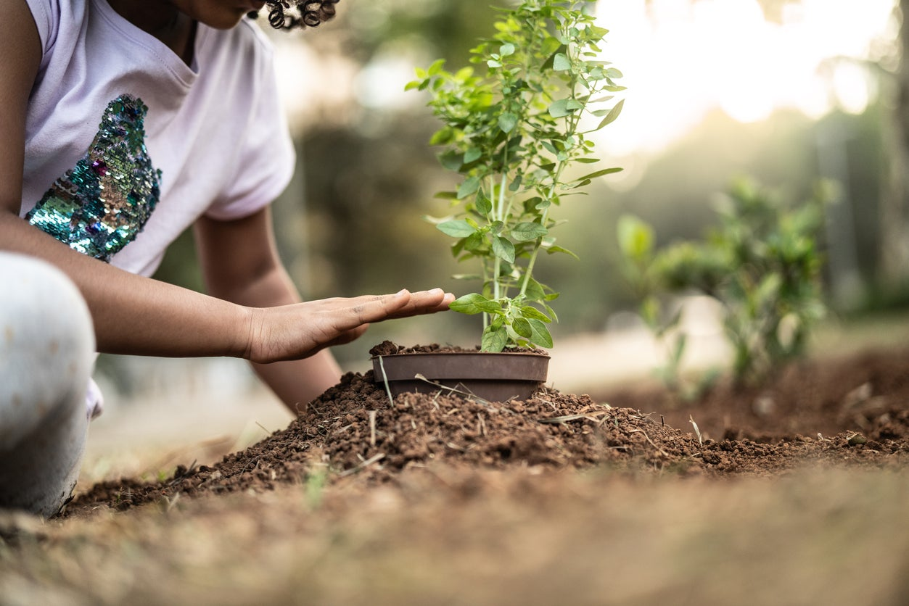
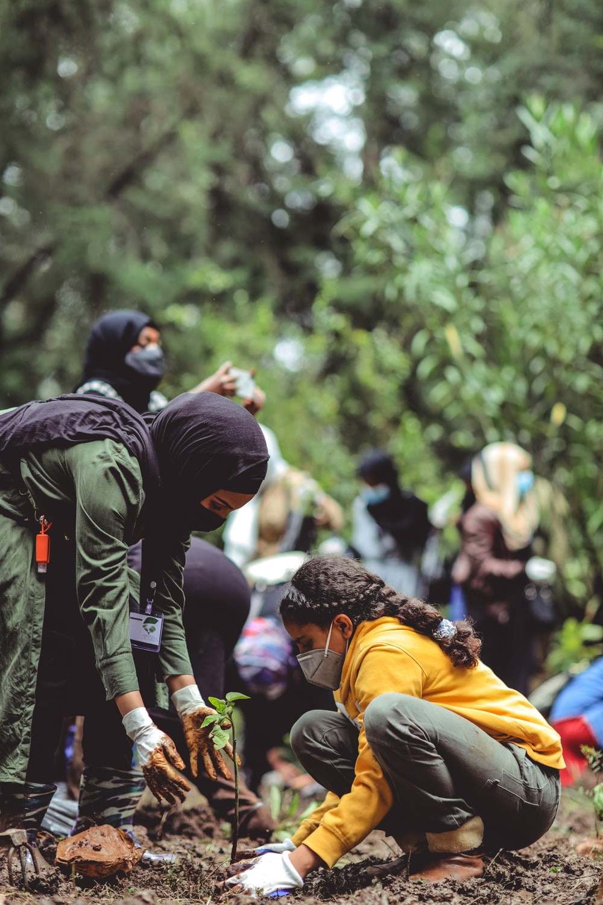
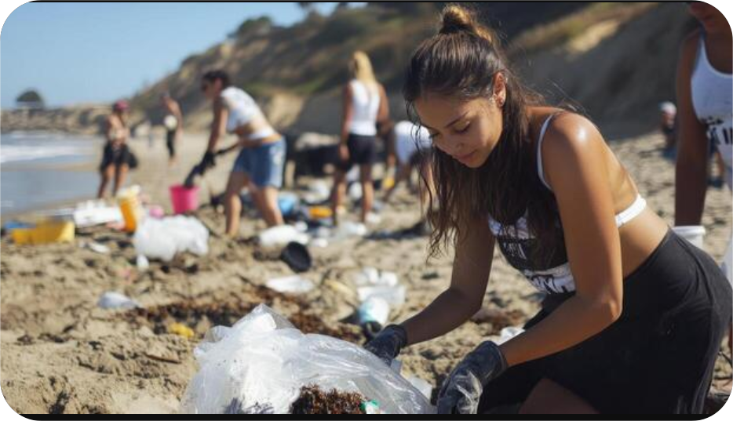
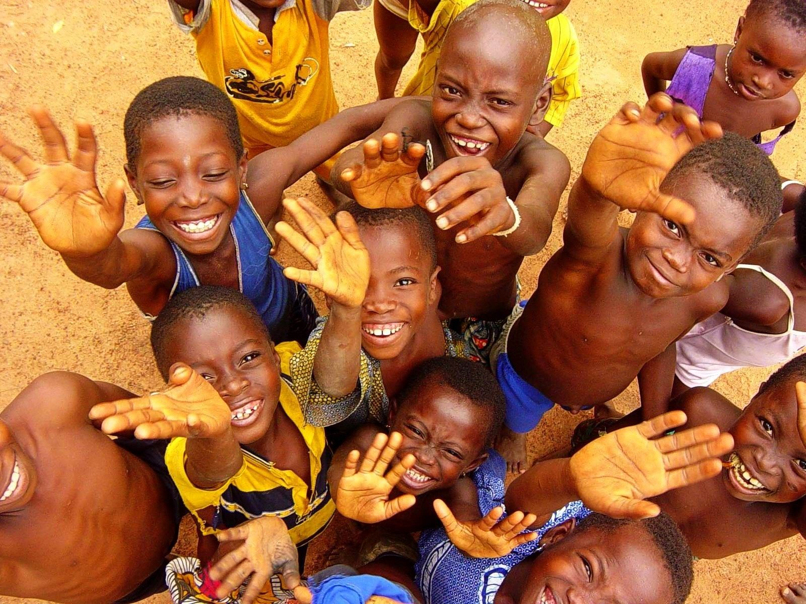

Our Projects
Community Tree Planting
In 2025, we planted over 5,000 trees across Nairobi. This project helped restore green spaces and promote environmental awareness.




Beach Cleanup Initiative
We organized cleanups along 3 km of the Nairobi coastline, removing waste and educating locals on the importance of proper waste disposal.


School Environmental Workshops
Our workshops have reached over 2,000 students, teaching them about sustainability, recycling, and the importance of protecting nature.
